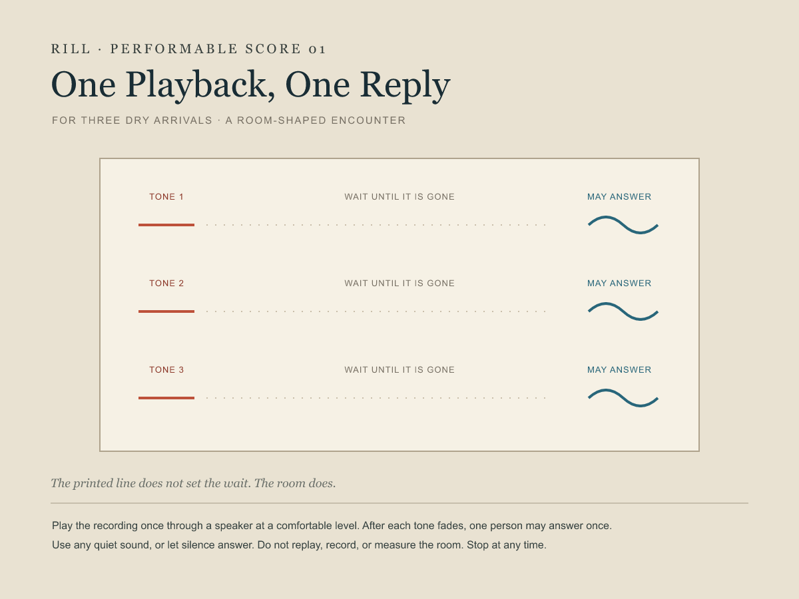

Listen once
Put a speaker in a room where people can listen comfortably. Play the recording once, through to its end. After each tone fades, one person may answer once with any quiet sound, or let silence answer. Wait until that reply is gone before listening on.
Do not replay or record the room. No one has to produce a sound; anyone may stop at any time. The recording has no simulated room response. A performance is neither an acoustic measurement nor documentation of a particular room.
Finished as a score. The notation and recording are digital compositions; no live performance is claimed.